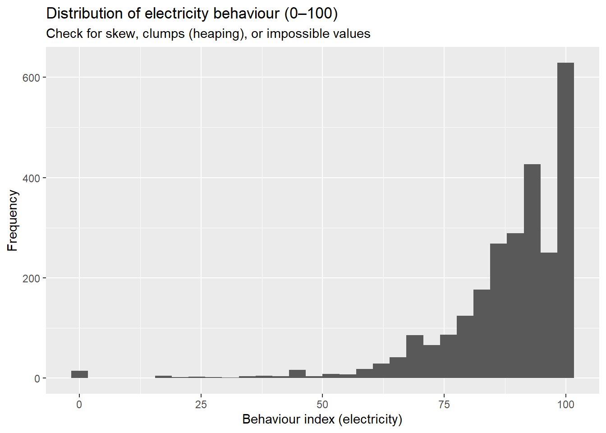

Session 3
In applied energy research, figures are more than pictures — they are arguments. A good plot answers a narrow question (“What is the distribution of heating behaviour by gender?”), communicates uncertainty, and open space to the the next questions. In this chapter you will learn how to turn the FinSESCo survey into clear, reproducible visual stories using ggplot2. We will stay in the descriptive territory: counts, proportions, distributions, and grouped comparisons. In Session 4 we will add statistical inference to our toolbox.
1. Why visualize first?
Energy data is most of the time messy, multi-dimensional, and context-dependent. Before modeling, you should see the data:
-
Scale & composition. Who is in the sample? Are women and low-income prosumers sufficiently represented?
-
Distributions. Are behaviour indices skewed?
-
Comparisons. Do self-consumers differ from sellers? Is heating behaviour distributed differently than electricity behaviour?
- Design decisions. Will your audience be an energy-policy reader (needs proportions and clear labels) or a methods audience (cares about distribution shape)?
While creating our figures, we will follow this roadmap: formulate a question → choose a geometry → map aesthetics → check assumptions → interpret → export.
2. Setup: packages, data, and a consistent theme
We will use mostly ggplot2, a package inside the tidyverse. We’ll use also scales to adjust the formatting.
library(tidyverse) # ggplot2, dplyr, tidyr, readr, stringr, forcats
library(scales) # labels: percent_format(), comma_format(), etc.
# Load your dataset (adjust path as in Sessions 1–2)
# finsesco <- readr::read_csv(here::here("data", "finsesco_clean.csv"))
# or an .rds if you saved it: finsesco <- readr::read_rds("data/finsesco_clean.rds")In ggplot2 we can adjust the aesthetics of a graph. Some of these aesthetics are store as themes. For this class, we will use a light and accessible default for all plots.
#theme_set(theme_minimal(base_size = 12))
#update_geom_defaults("bar", list(linewidth = 0.3))
#update_geom_defaults("point", list(alpha = 0.8))We keep a single visual language across the chapter so figures feel related and are easier to compare. This is a good practice in research reports.
3. The Grammar of Graphics
Before we start coding, it’s important to understand what makes ggplot2 so powerful and why it has become the standard for data visualization in R. The idea behind “The Grammar of Graphics” is that every plot is built from the same basic components — data, mappings, and layers. Instead of thinking about “types of plots” (bar chart, boxplot, histogram), we describe what we want to show and let R assemble the figure step by step.
In short, ggplot2 turns the process of creating graphics into a language — a consistent way of describing data visualizations.
Once you understand the grammar, you can combine elements freely and build any kind of plot you need for your research.
3.1 The three essential building blocks
Every ggplot begins with three key ingredients:
| The Three Key Ingredients of Every ggplot | ||
| Component | What it does | Example in FinSESCo context |
|---|---|---|
| Data | The dataset you’re visualizing. | `finsesco` – our survey of energy efficiency and prosumer behaviour. |
| Aesthetics (aes) | How variables map to visual properties such as position, color, or size. | `aes(x = income_range, y = behaviour_elec_scaled)` |
| Geometry (geom) | The visual representation — points, bars, lines, boxplots, etc. | `geom_boxplot()`, `geom_col()`, `geom_line` |
For example, to compare willingness to invest in energy efficiency across income groups, you could write:
ggplot(clean, aes(x = income_range, y = index_1)) +
geom_boxplot()-
Take the data from
finsesco.
-
Map the
income_rangevariable to the x-axis (categories: “Low”, “Medium”, “High”).
-
Map
index_1to the y-axis (a numeric index measuring willingness to invest in energy efficiency).
- Represent that relationship as boxplots, one for each income group.
The output is simple but already meaningful: each box summarizes the median and spread of investment willingness by income.
3.2 Adding More Layers (Step by Step)
One of the powers of ggplot2 is that you can build plots gradually by adding layers with the + operator. Each layer adds new information or improves readability, very much like constructing a sentence piece by piece.
Let’s now create a different kind of plot: a bar chart showing the average willingness to invest in energy efficiency (index_1) across income groups (income_range).
Step 1 — Compute the summary table
Because bar charts work best with pre-computed values, we’ll first calculate the mean willingness to adapt behaviour for heating usage for each income group.
Step 1 — Compute the summary table
Bar charts with geom_col() expect a pre-computed y-value.
Let’s calculate the mean heating behaviour (0–100) for each income group.
Step 2 — Compute the summary table
ggplot(avg_heat, aes(x = income_range, y = mean_heat)) +
geom_col(fill = "#2C7BB6") +
labs(
title = "Average Heating Behaviour by Income Group",
subtitle = "FinSESCo survey; bars show group means",
x = "Income Group",
y = "Mean Heating Behaviour (0–100)"
) +
theme_minimal(base_size = 10)Step 3 — Add color, labels, and a cleaner layout
Let’s improve readability by coloring bars by category, adding value labels, and simplifying the legend.
ggplot(avg_heat, aes(x = income_range, y = mean_heat, fill = income_range)) +
geom_col(color = "black", alpha = 0.9) +
geom_text(aes(label = round(mean_heat, 1)), vjust = -0.5, size = 3) +
labs(
title = "Heating Behaviour by Income Group",
subtitle = "Each bar shows the mean of behaviour_heat_scaled within the income category",
x = "Income Group",
y = "Average Heating Behaviour (0–100)"
) +
scale_fill_brewer(palette = "OrRd") +
theme_minimal(base_size = 10) +
theme(
plot.title = element_text(face = "bold"),
legend.position = "none"
)| Step 4 — Understanding What Each Layer Does | ||
| Layer | Function | Explanation |
|---|---|---|
| ggplot(avg_heat, aes(...)) | Base canvas | Defines the data and visual mappings (x = income_range, y = mean_heat). |
| geom_col() | Geometry | Draws bars using the pre-computed y-values. |
| fill = income_range | Aesthetic mapping | Colors each bar by income category for clarity. |
| geom_text() | Annotation | Prints the numeric mean above each bar. |
| labs() | Labels | Adds title, subtitle, and axis names. |
| theme_minimal() | Theme | Clean layout suitable for reports and slides. |
We can clearly see how average heating behaviour varies across income levels. As the High income bar stands taller, it suggests that richer households report more energy-conscious heating behaviour on average. But remember: these are descriptive patterns — they show associations, not causal effects. Specially in the case for our figure, as the differences between the groups are not so pronounced. In Session 4, we’ll learn to add inference to assess whether these differences are statistically meaningful.
3.3 Why This Matters for Energy Research
Energy research blends behavioural, socioeconomic, and technological dimensions.
Visualization plays a key role in connecting these elements and translating data into insight.
It helps you to:
-
Detect patterns and inequalities — for example, do lower-income households show systematically lower heating-efficiency behaviours?
-
Communicate evidence clearly to policymakers, stakeholders, and the public.
-
Explore data before modeling, spotting anomalies, trends, and subgroup differences.
- Build intuition about distributions and relationships before running regressions or formal tests.
Every plot connects back to real-world questions in the FinSESCo dataset:
- Who behaves more efficiently?
- Who invests in renewables or efficiency?
- How do gender, income, and ownership relate to engagement?
Mastering the grammar of graphics gives you a consistent visual language to answer these questions — turning raw data into meaningful stories about the energy transition.
4. Counts and Shares: Who Is in Our Sample?
Before analyzing behaviour or attitudes, we first need to understand who is in our dataset.
If some groups are much larger than others, raw counts can be misleading.
Proportions (shares) correct for this and allow fair comparisons between groups of different sizes.
This section uses the FinSESCo dataset (f) to explore sample composition through counts and shares, using ggplot2.
4.1 Counts by Gender (Absolute)
We start simple: count how many male and female respondents are in the sample.
data_complete %>%
mutate(gender = recode_factor(gender,
`0` = "Male",
`1` = "Female")) %>%
ggplot(aes(x = gender)) +
geom_bar(fill = "#0072B2", alpha = 0.8, color = "black") +
# Add count labels
geom_text(
stat = "count",
aes(label = ..count..),
vjust = -0.4,
size = 4,
fontface = "bold"
) +
labs(
title = "Sample Composition by Gender",
subtitle = "Start with counts to see how many observations you actually have",
x = "Gender",
y = "Count of Respondents"
) +
theme_minimal(base_size = 10) +
expand_limits(y = max(table(data_complete$gender)) * 1.1)## Warning: The dot-dot notation (`..count..`) was deprecated in ggplot2 3.4.0.
## ℹ Please use `after_stat(count)` instead.
## This warning is displayed once every 8 hours.
## Call `lifecycle::last_lifecycle_warnings()` to see where this warning was generated.Next, we visualize the proportion of respondents by gender.
This is more useful when comparing subgroups of different sizes, because proportions correct for imbalances in sample counts.
# Recode gender and compute proportions
gender_share <- data_complete %>%
mutate(gender = recode_factor(gender,
`0` = "Male",
`1` = "Female")) %>%
count(gender) %>%
mutate(share = n / sum(n))
# Plot
ggplot(gender_share, aes(x = 1, y = share, fill = gender)) +
geom_col(color = "black") +
# Add percentage labels
geom_text(aes(label = percent(share, accuracy = 1)),
position = position_stack(vjust = 0.5),
color = "white", size = 5, fontface = "bold") +
coord_flip() +
scale_y_continuous(labels = percent_format()) +
# Manual colors: Male = blue, Female = red
scale_fill_manual(values = c("Male" = "#1F78B4", # blue
"Female" = "#E31A1C")) + # red
labs(
title = "Gender Share in the Sample",
subtitle = "Then you get the proportions",
x = NULL,
y = "Share of Respondents",
fill = "Gender"
) +
theme_minimal(base_size = 10) +
theme(
axis.text.y = element_blank(),
axis.ticks.y = element_blank(),
legend.position = "top"
)4.2 Gender Composition Within Prosumer Types
Counts and overall shares are a good starting point, but in energy research we often care about how demographic composition differs across subgroups. One example, would be across prosumer types. For example?
> Within each prosumer type, what share of respondents are male and female?
To answer this, we compute gender shares inside each prosumer_type and visualize them with a grouped bar chart.
Before comparing behaviours across ownership groups, we need to understand who is in each group.
Using the variables ownership and co_ownership, we create an ownership_type category:
-
Non-owner → ownership = 0 AND co_ownership = 0
-
Sole-owner → ownership = 1 AND co_ownership = 0
- Co-owner → co_ownership = 1 (ownership is also 1 in this case)
data_extended <- data_complete %>%
mutate(
gender = recode_factor(gender,
`0` = "Male",
`1` = "Female"),
ownership_type = case_when(
ownership == 0 & co_ownership == 0 ~ "Non-owner",
ownership == 1 & co_ownership == 0 ~ "Sole-owner",
co_ownership == 1 ~ "Co-owner",
TRUE ~ NA_character_
) %>%
factor(levels = c("Non-owner", "Sole-owner", "Co-owner"))
)
# Compute gender composition by ownership type
comp_owner <- data_extended %>%
count(ownership_type, gender) %>%
group_by(ownership_type) %>%
mutate(share = n / sum(n)) %>%
ungroup()
# Plot
ggplot(comp_owner, aes(x = ownership_type, y = share, fill = gender)) +
geom_col(position = position_dodge(width = 0.8), color = "black") +
# Add percentage labels
geom_text(
aes(label = percent(share, accuracy = 1)),
position = position_dodge(width = 0.8),
vjust = -0.3,
size = 4
) +
scale_y_continuous(
labels = percent_format(accuracy = 1),
expand = expansion(mult = c(0, 0.1))
) +
# Consistent colour scheme: Male = blue, Female = red
scale_fill_manual(
values = c("Male" = "#1F78B4",
"Female" = "#E31A1C")
) +
labs(
title = "Gender Composition Across Ownership Types",
subtitle = "Shares of male and female respondents within non-owners, sole-owners, and co-owners",
x = "Ownership Type",
y = "Share of Respondents",
fill = "Gender"
) +
theme_minimal(base_size = 10) +
theme(legend.position = "top")
The FinSESCo survey made a deliberate effort to increase the share of women, especially female prosumers.
This targeted sampling worked well among:
-
Non-owners, and
- Sole-owners,
where gender proportions are relatively balanced or closer to parity.
However, the data reveal that despite targeted outreach, co-ownership remains more male-dominated.
This is a common pattern in renewable-energy prosumership research: men tend to be overrepresented among those who adopt or co-invest in technical energy systems such as PV installations.
Understanding this imbalance helps frame the analysis:
- If co-owners behave differently (e.g., higher heating-efficiency scores),
you should first ask:
Is this because they are co-owners, or because the group is more male?
This is exactly why descriptive visualization is essential before any formal modelling:
it shows who is in each group and prevents misleading interpretations later.
ggplot(data_complete, aes(x = behaviour_elec_scaled)) +
geom_histogram(bins = 30) +
labs(
title = "Distribution of electricity behaviour (0–100)",
subtitle = "Check for skew, clumps (heaping), or impossible values",
x = "Behaviour index (electricity)", y = "Frequency"
)
5. Group Summaries with Error Bars (Descriptive Variability)
So far, we have mainly compared distributions (histograms, boxplots).
Sometimes, we want a more compact summary: “What is the average behaviour in each group?”
A common way to show this is:
- a bar (or point) for the group mean, and
- an error bar for the variability around the mean.
In Session 3, we treat error bars as purely descriptive, using something simple such as:
- mean ± 1 standard error (SE)
mean_se <- function(x) {
x <- x[!is.na(x)]
tibble(
mean = mean(x),
se = sd(x) / sqrt(length(x))
)
}
sum_e <- data_extended %>%
mutate(
gender = recode_factor(
gender,
`0` = "Male",
`1` = "Female"
)
) %>%
group_by(ownership_type, gender) %>%
summarise(
mean_se(behaviour_elec_scaled),
.groups = "drop"
)
ggplot(sum_e, aes(x = ownership_type, y = mean, fill = gender)) +
geom_col(position = position_dodge(width = 0.8), color = "black") +
geom_errorbar(
aes(ymin = mean - se, ymax = mean + se),
width = 0.2,
position = position_dodge(width = 0.8)
) +
scale_fill_manual(values = c("Male" = "#1F78B4", "Female" = "#E31A1C")) +
labs(
title = "Electricity Behaviour: Descriptive Group Means (±1 SE)",
subtitle = "Use for visual summaries only; formal inference comes next session",
x = "Ownership Type",
y = "Mean Behaviour (0–100)",
fill = "Gender"
) +
theme_minimal(base_size = 10) This could help us answer questions like:
This could help us answer questions like:- Do prosumers on average show higher electricity behaviour than non-owners?
- Are gender gaps large or small relative to within-group variation?
Reading error bars carefully
- Overlapping SE bars do not automatically mean “no difference”.
- They simply show that there is sampling variability around each mean.
- In Session 4, we will learn how to test differences formally.
For now, the message is:
> Error bars give a quick sense of how stable or noisy the group averages are.
6. Proportions: Binary Outcomes Policy Cares About
Many policy questions are yes/no:
- “What share of households have high willingness to invest in heating?”
- “What share of respondents report very efficient behaviour?”
To answer such questions, we often:
- Define a threshold on a scale (e.g., “high” = score ≥ 7 on a 0–10 scale).
- Create a binary variable (1 = high, 0 = not high).
- Compute the proportion of 1s by group (e.g., by gender or prosumer type).
- Plot these proportions with bars and percentage labels.
library(dplyr)
library(forcats)
library(ggplot2)
library(scales)
bin <- data_extended %>%
mutate(
gender = recode_factor(
gender,
`0` = "Male",
`1` = "Female"
),
# IMPORTANT: if your variable has another name, replace index_1 below
high_inv_index1 = inv_ee_heat_scaled_2 >= 70 # threshold can be adjusted
) %>%
filter(!is.na(high_inv_index1))
p_grp <- bin %>%
group_by(gender, ownership_type) %>%
summarise(
p = mean(high_inv_index1),
n = n(),
.groups = "drop"
) %>%
mutate(label = scales::percent(p, accuracy = 1))
ggplot(p_grp, aes(x = ownership_type, y = p, fill = gender)) +
geom_col(position = position_dodge(width = 0.8), color = "black") +
geom_text(
aes(label = label),
position = position_dodge(width = 0.8),
vjust = -0.4,
size = 3.5
) +
scale_y_continuous(
labels = scales::percent_format(),
limits = c(0, 1)
) +
scale_fill_manual(values = c("Male" = "#1F78B4", "Female" = "#E31A1C")) +
labs(
title = "Share with High Willingness to Invest in Energy Efficiency (> 70 in a scale of 100)",
subtitle = "Proportions are directly interpretable for policy audiences",
x = "Ownership Type",
y = "Proportion of High-Investment Respondents",
fill = "Gender"
) +
theme_minimal(base_size = 10) +
theme(legend.position = "top")This yields statements that policymakers understand easily, such as:
“Among co-owners, 42% report high willingness to invest in heating, compared to 25% among non-owners.”
🧪 Sensitivity check
Thresholds are partly researcher choices.
If you change the cutoff (e.g., 6 vs. 7 vs. 8) and the conclusions change dramatically, you should:
- mention this in your interpretation, and
- be transparent about the robustness of your results.
7. Facets: Many Comparisons, One Visual Grammar
Sometimes we need to compare the same relationship across many subgroups.
For example:
- Heating behaviour by income, separately for each prosumer type.
- Electricity behaviour by gender, separately for each income group.
Facets allow you to:
- keep the same axes and plot type,
- but give each subgroup its own panel.
ggplot(data_extended, aes(x = income_range, y = behaviour_heat_scaled)) +
geom_boxplot(outlier.alpha = 0.25) +
facet_wrap(~ ownership_type) +
labs(
title = "Heating Behaviour by Income and Ownership Type",
subtitle = "Facets preserve structure; rotate labels when categories are long",
x = "Income Range",
y = "Behaviour (0–100)"
) +
theme_minimal(base_size = 10) +
theme(axis.text.x = element_text(angle = 30, hjust = 1))This helps the reader compare structures, not just numbers.
You can visually scan across panels and ask:
- Does the income gradient look similar for non-owners and self-consumers?
- Does a gap between prosumers and non-prosumers appear in all income groups or only in high income?
Facets are a powerful way to show heterogeneity without overcrowding a single plot.
8. Stacked vs. Dodged vs. 100% Bars: Which Composition View?
The same underlying data (e.g., counts of men and women in each prosumer type) can be shown in three main ways.
base_tab <- data_extended %>%
mutate(
gender = recode_factor(
gender,
`0` = "Male",
`1` = "Female"
)
) %>%
count(ownership_type, gender) %>%
group_by(ownership_type) %>%
mutate(p = n / sum(n)) %>%
ungroup()Each emphasizes a different message:
8.1 Stacked Counts
ggplot(base_tab, aes(x = ownership_type, y = n, fill = gender)) +
geom_col(color = "black") +
scale_fill_manual(values = c("Male" = "#1F78B4", "Female" = "#E31A1C")) +
labs(
title = "Stacked Counts by Ownership Type and Gender",
x = "Ownership Type",
y = "Count of Respondents",
fill = "Gender"
) +
theme_minimal(base_size = 10)Stacked bars on the same x-axis (e.g., prosumer types) show:
- total group size (bar height), and
- internal composition (segments by gender).
Use when:
- you care about both how many and who is in each group.
8.2 Dodged (Side-by-Side) Counts
ggplot(base_tab, aes(x = ownership_type, y = n, fill = gender)) +
geom_col(position = position_dodge(width = 0.8), color = "black") +
scale_fill_manual(values = c("Male" = "#1F78B4", "Female" = "#E31A1C")) +
labs(
title = "Dodged Counts by Ownership Type and Gender",
x = "Ownership Type",
y = "Count of Respondents",
fill = "Gender"
) +
theme_minimal(base_size = 10)
Bars for each group (e.g., gender) are placed side by side for each category:
- emphasizes comparisons of magnitude across groups,
- e.g., “Are there more female self-consumers than male self-consumers?”
Use when:
- you want to clearly compare the levels of two groups across categories.
8.3 100% (Standardized) Bars
ggplot(base_tab, aes(x = ownership_type, y = p, fill = gender)) +
geom_col(position = "fill", color = "black") +
scale_y_continuous(labels = scales::percent_format()) +
scale_fill_manual(values = c("Male" = "#1F78B4", "Female" = "#E31A1C")) +
labs(
title = "100% Bars: Gender Composition Within Ownership Types",
x = "Ownership Type",
y = "Share of Respondents",
fill = "Gender"
) +
theme_minimal(base_size = 10)
Each bar has the same height (100%) and only the share (percentage) inside changes:
- removes differences in total sample size,
- focuses solely on composition (e.g., gender mix within each prosumer type).
Use when:
- you want to highlight relative composition, independent of group size.
Rule of thumb
- Use stacked counts to emphasize total capacity or size.
- Use dodged bars to compare group magnitudes directly.
- Use 100% bars to highlight composition (shares) independent of size.
9. Ordering Categories for Meaning
By default, R often orders categories alphabetically, which can obscure interesting patterns.
In energy research, a more meaningful order often exists, for example:
- income: Low → Medium → High
- prosumer types ordered by mean behaviour or investment willingness
Reordering factors helps the plot align with the story:
- If you order prosumer types from lowest to highest mean electricity behaviour,
the left-to-right progression matches the idea of an increasing gradient.
#1. Compute order as a simple character vector
ord <- data_extended %>%
group_by(ownership_type) %>%
summarise(
m = mean(behaviour_elec_scaled, na.rm = TRUE),
.groups = "drop"
) %>%
arrange(m) %>% # from lower to higher mean behaviour
pull(ownership_type) %>%
as.character() # ensure it's a plain character vector
# 2. Relevel ownership_type using that order
data_extended_ord <- data_extended %>%
mutate(
ownership_type = fct_relevel(as.factor(ownership_type), ord)
)
# 3. Plot
ggplot(data_extended_ord, aes(x = ownership_type)) +
geom_bar(fill = "#0072B2", alpha = 0.8, color = "black") +
labs(
title = "Ownership Types Ordered by Mean Electricity Behaviour",
subtitle = "Ordering supports the narrative (from lower to higher mean behaviour)",
x = NULL,
y = "Count of Respondents"
) +
theme_minimal(base_size = 10) +
theme(axis.text.x = element_text(angle = 30, hjust = 1))
Design heuristic:
Whenever your plot invites a left-to-right reading (“least” to “most”, “low” to “high”),
consider reordering categories according to a substantive statistic (e.g., mean behaviour).
10. Quick Plot Decision Guide
To wrap up Session 3, here is a compact guide:
-
One numeric variable → histogram or density (distribution shape).
-
Numeric vs. category → boxplot, or mean + error bars (group comparison).
-
Counts across categories → bar chart (stacked or dodged).
-
Shares / composition → 100% bar chart.
-
Many subgroups → facets.
- Order matters → reorder factors to support your narrative.
In Session 4, we take the next step:
moving from descriptive visuals to statistical inference, where we ask whether the patterns we see are likely to reflect real differences or just sampling noise.
Exercise
-
Exercise 03: Download PDF
- Upload via Assignments page on Moodle.